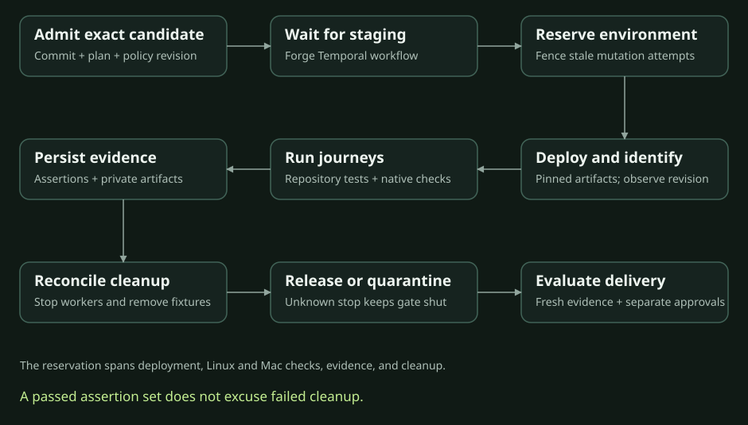

Status: broad design proposal, November 5, 2026. Repository roles, k3s staging, and queuing against shared staging are agreed. The detailed contract below is a proposal wherever it exceeds the pinned producer contract.
The November 6 durable verification queue milestone adds the first concrete Birbforge queue around the unchanged pinned Birbverify producer in a synthetic fixture. Its reference defines the selected wire boundary and one-attempt semantics. Local execution and independent source review evidence are recorded in that reference. This proposal does not establish real staging admission or native phone acceptance.
The promise#
Given an approved verification plan and an immutable candidate, Birbverify runs the specified checks in the permitted environment and returns attributable evidence. Birbforge decides whether that evidence satisfies delivery policy. An agent's narrative cannot replace a missing check or authorize a merge.
The first version queues runs against the existing shared k3s staging environment. Reserve it from deployment through all checks and cleanup. Linux and Mac checks may run concurrently only when their fixtures and actions do not interfere. Per-PR preview environments remain a later option.
Ownership#
| Component | Owns | Does not own |
|---|---|---|
| Birbforge | Approved goals, acceptance plan, policy, durable delivery workflow, environment queue, evidence index, reviews and merge gates | Agent reasoning engine or application tests |
| Birbcrew | Persistent coworker sessions, authorized factory tools, explanations and review assistance through AG-UI | Authority to invent human approval or change required checks |
| Birbverify | Verification activities, worker capability matching, execution adapters, evidence manifests and result reporting | A second scheduler, merge policy or a new testing framework |
| Application repository | Feature tests, user journeys, deployment and recovery procedures | Authority for an unreviewed candidate to weaken installation policy |
| Birbhomes | Worker and cluster provisioning, private access and infrastructure configuration | Application acceptance rules |
Separate repositories do not require separate databases or a new service per responsibility. Initially, Birbforge's Temporal workflows should dispatch Birbverify's worker activities. Birbcrew invokes authorized Birbforge tools; it does not bypass admission by sending arbitrary jobs to workers. Temporal is selected. Concrete worker transport and language bindings remain implementation choices to prove.
Request: what Birbforge supplies#
Requests are versioned, immutable records. Multiple execution attempts under one request remain a future proposal. The pinned producer permits one attempt and returns the original immutable terminal result on identical replay. A changed candidate or plan creates a new request.
| Field group | Required meaning |
|---|---|
| Identity | Contract version, request ID, goal ID, PR identity, correlation ID, submission idempotency key |
| Candidate | Repository identity, exact source commit, PR head, base commit when relevant, and whether the checked artifact is the head or a resolved integration commit |
| Plan | Immutable acceptance-plan revision/digest, required check IDs, assertions, procedure references pinned to revisions, and evidence requirements |
| Authority | Submitting principal, authorizing workflow, policy revision, permitted environment and operations |
| Target | Logical environment ID, expected application components, artifact references/digests when available, and deployed-revision identification method |
| Resources | Worker capabilities, fixture requirements, bounded execution deadlines, retry budget and cleanup procedure |
| Evidence | Required artifact types, access classification, retention policy reference, and telemetry correlation |
Environment IDs resolve through private installation configuration. Requests contain secret references rather than credentials. Workers fetch only the capabilities and credentials required for their assigned activity. A requested capability is not itself a grant of access.
Use repository-native procedures first. A procedure reference can identify a verification skill plus executable checks; it need not force every repository into a new command framework. Record the exact instructions and tool versions used. Agent-driven journeys must retain observations and action records as well as their conclusions.
The accepted plan derives from approved scope and trusted policy. Candidate test changes are visible for review and cannot silently delete required assertions. Installation constraints take precedence; repository rules can add restrictions. Conflicts stop admission and surface a decision request.
Execution and environment ownership#

Detailed logical source behind this simplified diagram
sequenceDiagram
participant F as Birbforge
participant D as Durable execution engine
participant V as Birbverify workers
participant S as Shared k3s staging
participant U as Phone / browser via AG-UI
F->>D: Admit immutable request and queue for staging
D->>V: Reserve environment and assign attempt
V->>S: Deploy exact candidate via repository procedure
V->>S: Confirm revision and readiness
V->>S: Execute approved journeys
V->>D: Persist check records and evidence references
V->>S: Clean fixtures and confirm safe release
D->>F: Finalize evidence manifest and outcome
F->>U: Project result and required decisions
F->>F: Evaluate current revision, reviews and merge policyThe reservation covers the whole shared environment journey, including a Mac worker testing the application deployed by a Linux worker. The owner confirms the Mac is already joined to the k3s setup. Reuse Birbhomes' documented Linux guest and native macOS runner paths on that host, including their existing lifecycle gates. Native Apple tools run on macOS; Linux container jobs run in the guest. Current toolchain readiness remains to be verified. CI, manual deploys, and other writers must respect the reservation or be detected as interference. Check deployed identity before and after the journey; record deployment changes during the interval where the environment supports that evidence. A single successful rollout is insufficient proof that the intended candidate was tested throughout.
Birbforge's Temporal workflows coordinate durable queue ownership and leases. Do not implement another general-purpose queue in Birbverify. Expired ownership must not let an old worker continue mutating staging while a new run starts. Use supported fencing at mutation boundaries and reconcile running processes and deployments before handing over the environment. If ownership or termination is uncertain, quarantine staging and surface an operational request rather than overlap runs.
Isolate each checkout and its writable files. Use synthetic test identities and fixtures. Candidate code and agent-produced commands remain untrusted input; they do not inherit production credentials or authority to alter the plan. Isolation for native Mac execution is an explicit implementation requirement still to be selected, not something a worktree alone provides.
Lifecycle and outcomes#
Track lifecycle separately from what the checks established:
| Lifecycle | Meaning |
|---|---|
| Queued | Admitted and waiting for resources/environment |
| Running | An identified attempt owns execution |
| Finalizing | Evidence and cleanup outcomes are being reconciled |
| Terminal | Immutable outcome and evidence manifest recorded |
| Terminal outcome | Meaning |
|---|---|
| Passed | Every required assertion passed with required attributable evidence |
| Failed | At least one required assertion demonstrably failed |
| Inconclusive | Infrastructure, missing evidence, skipped required checks, or environment interference prevented a conclusion |
| Cancelled | Cancellation was acknowledged and execution stopped |
| Superseded | A newer candidate or plan replaced this request; its evidence remains historical |
Each check records its own outcome, including not-run reasons, even when the overall run fails early. Track cleanup separately as complete, failed, or unknown. A passed assertion set with failed cleanup does not release staging or make the complete delivery gate green. Cancellation requested is not the same as cancellation acknowledged; unresolved processes retain the reservation or quarantine until reconciled.
Worker loss does not prove application failure. A demonstrated assertion failure remains in history. Bounded automatic retry is a future proposal, not pinned producer behavior. The current queue does not automatically retry execution. An uncertain attempt requires producer reconciliation and, where needed, a separate supervisor recovery receipt. Recovery preserves the original manifest. Assertion failures go to the owner for repair or explicit flaky-test investigation.
Admission with the same idempotency key and identical payload returns the same request. Reusing the key with a different payload is an error. External effects such as deploys, uploads and fixture creation require their own stable operation identities and reconciliation. Workflow durability alone does not make those effects exactly once. Never blindly repeat a deployment with an unknown result.
Result: what Birbverify returns#
The result is a machine-readable manifest plus a concise human summary. Large artifacts live in private artifact storage, not inside protocol events.
| Evidence group | Contents |
|---|---|
| Provenance | Request/attempt IDs, worker identity and capabilities, tool versions, source and plan revisions, policy revision, timestamps |
| Deployment | Observed revision, immutable image/artifact identifiers, environment ID, readiness evidence and interference observations |
| Checks | Required check ID, assertion, outcome, observations, duration, command/action record and not-run reason where applicable |
| Artifacts | Stable artifact ID, type, size, digest, capture time, access classification and retention/expiry metadata |
| Operations | Retry history, cancellation acknowledgement, fixture cleanup and environment-release outcome |
| Summary | What worked, what failed, what remains unknown, and links to the underlying evidence |
Authenticate worker submissions and restrict who can finalize manifests. Artifact digests detect substitution but do not prove that an honest or independent check occurred. Record provenance and reviewer independence; do not call the manifest a cryptographic attestation unless such a system is actually implemented. Artifact access is authorized on demand; do not store permanent public links or expiring download URLs as the artifact identity.
Private artifacts are the default even for public repositories. Redact secrets before upload; apply stricter handling to screenshots, recordings and logs. Missing, expired or inaccessible required evidence is visible to the merge gate. Exact retention duration and storage software are still open decisions.
Freshness and merge decisions#
Birbforge checks the result against the current PR, approved plan, required reviews and current policy at decision time. A new PR head invalidates the old candidate's verification. If verification covered an integration commit, a changed base requires evaluating that relationship again; never relabel a different commit as tested. The merge strategy must preserve a documented relationship between tested and merged artifacts. CI and production health then verify the actual deployed revision after merge.
No Birbverify result approves a PR by itself. Independent AI review and required human decisions remain separate records bound to the revision. Changing a test or acceptance rule requires review appropriate to that change, rather than treating a new green report as sufficient.
Production observation can later reuse read-only Birbverify adapters, including pup. The first staging contract does not grant production deployment or rollback authority. Birbforge retains those separate, repository-governed workflows.
AG-UI, inbox and Datadog#
Birbforge projects authoritative verification state through AG-UI so the chief of staff, inbox and phone/browser screens share the same request, attempt and decision identities. Display check progress, evidence links, queue position when known, and reasons for intervention. Use supported AG-UI state/tool events; do not invent a second user-facing agent protocol.
Closing a stream does not cancel verification. Reconnecting reads the current snapshot and available history. Retry and cancel actions pass through the same authorized handlers whether invoked from a card or a coworker conversation. The client cannot mark a check passed by editing shared state. A2UI is optional.
Emit Datadog telemetry for queue waits, run durations, check outcomes, retries, worker loss, cleanup failures and evidence persistence failures. Keep request, PR and commit identifiers in correlated logs/traces rather than unbounded metric labels. Telemetry is diagnostic evidence; authoritative run state remains in the chosen durable backing system.
First complete pilot#
For Birbparty, use the repository's existing staging deployment guidance and Birbhomes infrastructure rules. Verify the deployed livestream/chat application on k3s; local unit tests alone cannot satisfy the feature acceptance plan.
The proposed journey covers creator upload of six custom emojis, rejection of a seventh, viewer use and receipt during a livestream, authorization of emoji management, and corresponding native-app behavior. Exact channel scope, replacement/deletion behavior, asset restrictions and native acceptance details still need agreement before execution.
The first contract proof should also exercise worker interruption, duplicate submission, a stale PR head and a second run waiting for shared staging. These are acceptance scenarios for implementation, not tests claimed to have run.
Decisions still needed#
- Temporal worker placement and the runtime used by each verification worker.
- Broader request/result compatibility beyond the pinned fixture contract.
- Private artifact storage, retention and native-worker isolation.
- Repository policy location, trusted revision and review procedure.
- Pilot acceptance details and full staging readiness.
The owner approved HTML with these unresolved deployment gates labeled. They do not block the isolated contract proof. Resolve them before accepting real candidate execution on staging.